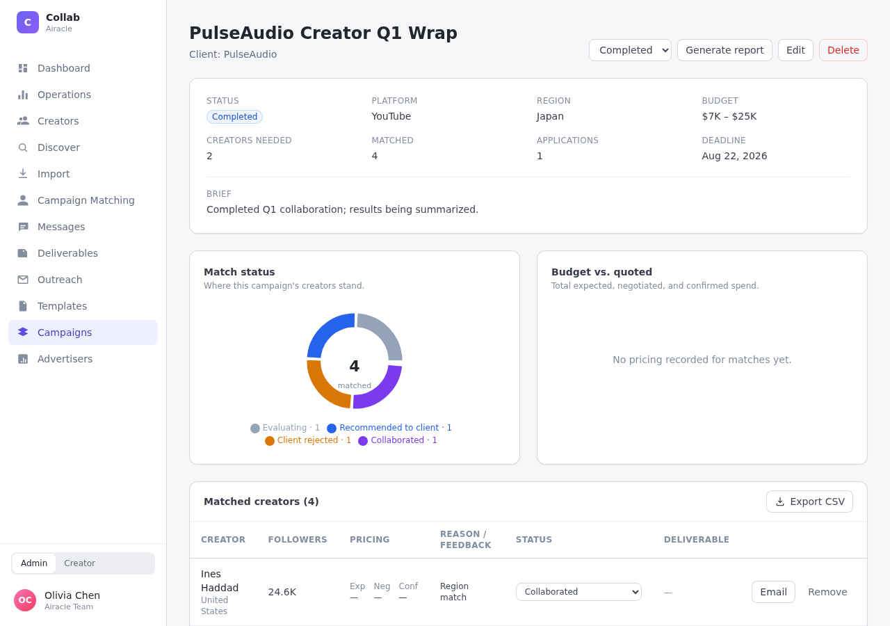
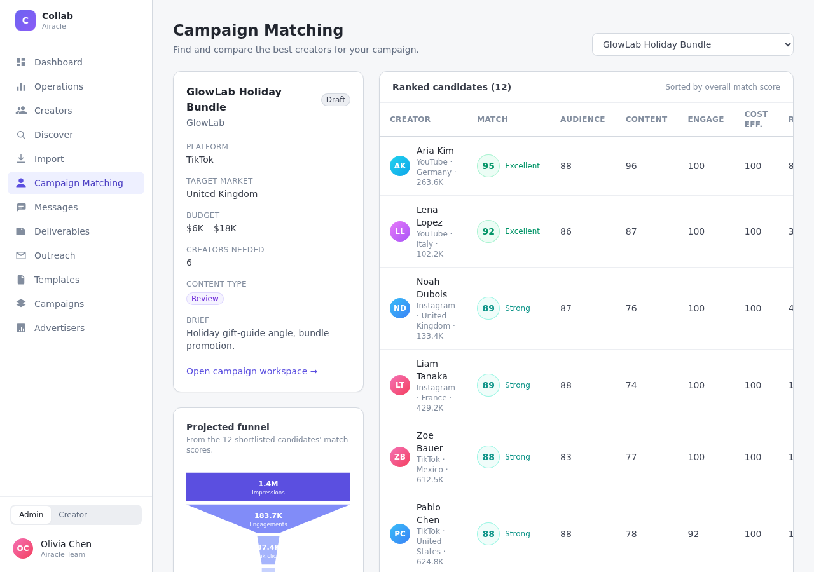
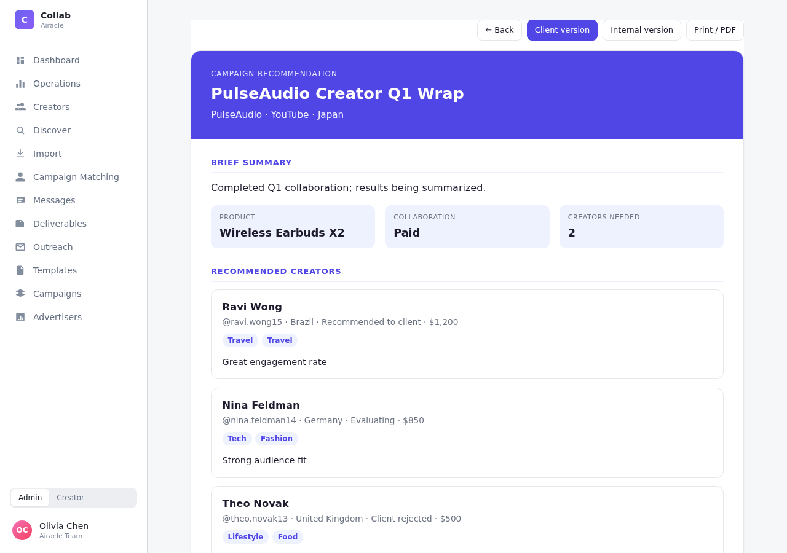
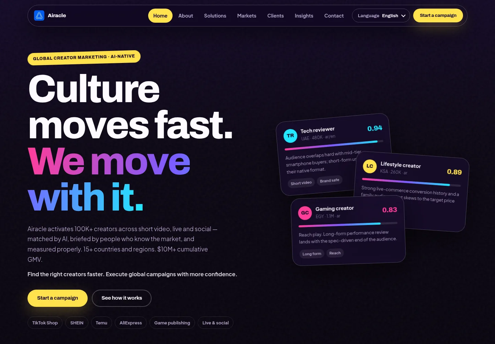

先把沟通抽象成状态
每个阶段都有进入条件、可执行动作与退出方式。
AI PRODUCT MANAGER · BEIJING
我负责把分散的人、信息和规则，整理成能够真实运行的产品。工作覆盖业务建模、产品设计、AI 能力落地与上线交付。
查看代表作 ↓
品牌、运营和创作者原本分散在 Telegram、WhatsApp、邮件和社媒私信中协作。我没有先画页面，而是先定义合作对象、状态和责任边界。


每个阶段都有进入条件、可执行动作与退出方式。
系统不替创作者默认接受品牌方的新要求。
资格、付款与争议仍由确定性规则和人工负责。
AI WORKFLOW
把品牌需求转成候选发现、规则过滤、匹配解释与人工复核。机器处理信息，人保留判断。
